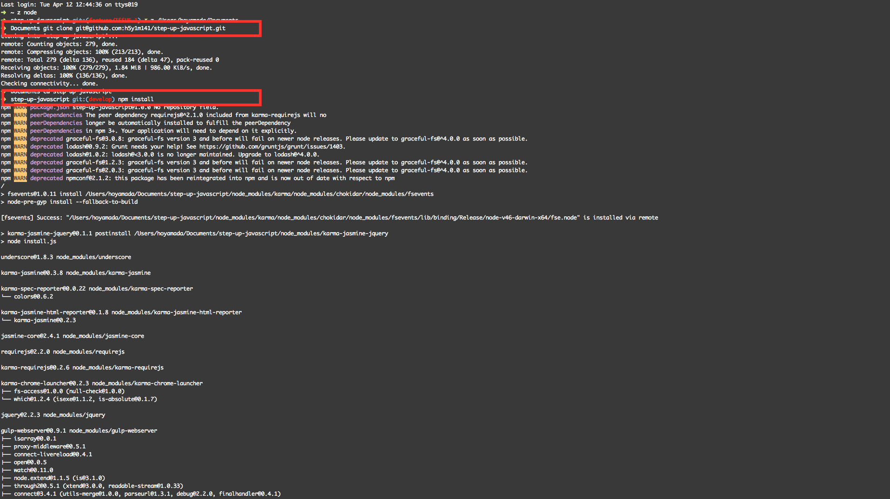
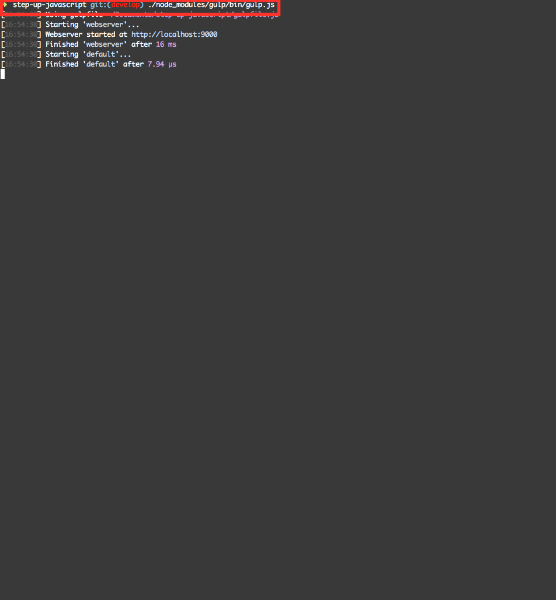

Mac/Windows上でNode.jsの環境を利用する
普段からNode.js環境を利用してる方の場合には、npmが利用できる状況かと思いますので、以下手順での環境構築が手軽なのでこちらでもOKです。
動作確認環境
以下のとおりです。
- Mac OS X Yosemite（10.10.5）
- Mac OS X El Capitan（10.11.4）
- Node.js
- v4.2.4
Nodeのバージョンについて
Node.js v4とNode.js v5の違いはNode.js 日本ユーザーグループ代表の方が書いた以下記事が参考になります。
Node.js v4はLTSというリリースしてから2年半サポートするサポートポリシーがついていますが、Node.js v5にはついていません。つまり、 Node.js v5は次のバージョンが出たらサポートされなくなります。 今のところ、 LTSの対象になるのは偶数のバージョンとされています。ただし、偶数のバージョンが必ずLTSというわけではなく、今のところ偶然そういうバージョンになっているというのが正しい状態なので、きちんとLTSかどうかを把握するためには、バージョン番号の他にLTS識別名(ArgonやBoron等の元素名)が付いていることを確認したほうがよいです。
Node.jsのインストール方法
Macの場合には色々あるかもしれませんが、私はNode.jsはnodebrewを利用してインストールしてます。
nodebrew -v
nodebrew 0.9.2
Usage:
nodebrew help Show this message
nodebrew install <version> Download and install a <version> (compile from source)
nodebrew install-binary <version> Download and install a <version> (binary file)
nodebrew uninstall <version> Uninstall a version
nodebrew use <version> Use <version>
nodebrew list List installed versions
nodebrew ls Alias for `list`
nodebrew ls-remote List remote versions
nodebrew ls-all List remote and installed versions
nodebrew alias <key> <version> Set alias to version
nodebrew unalias <key> Remove alias
nodebrew clean <version> | all Remove source file
nodebrew selfupdate Update nodebrew
nodebrew migrate-package <version> Install global NPM packages contained in <version> to current version
nodebrew exec <version> -- <command> Execute <command> specified <version>
Example:
# install from binary
nodebrew install-binary v0.10.22
# use a specific version number
nodebrew use v0.10.22
# io.js
nodebrew install-binary io@v1.0.0
nodebrew use io@v1.0.0
環境構築する
いつも通りに
npm install
していただけれればOKです
参考までに作業時の画面キャプチャを以下貼っておきます

npm install 完了したら、gulpのweb server機能が動作するか確認
以下コマンドでgulpのweb server機能が動作するか確認してください
./node_modules/gulp/bin/gulp.js
